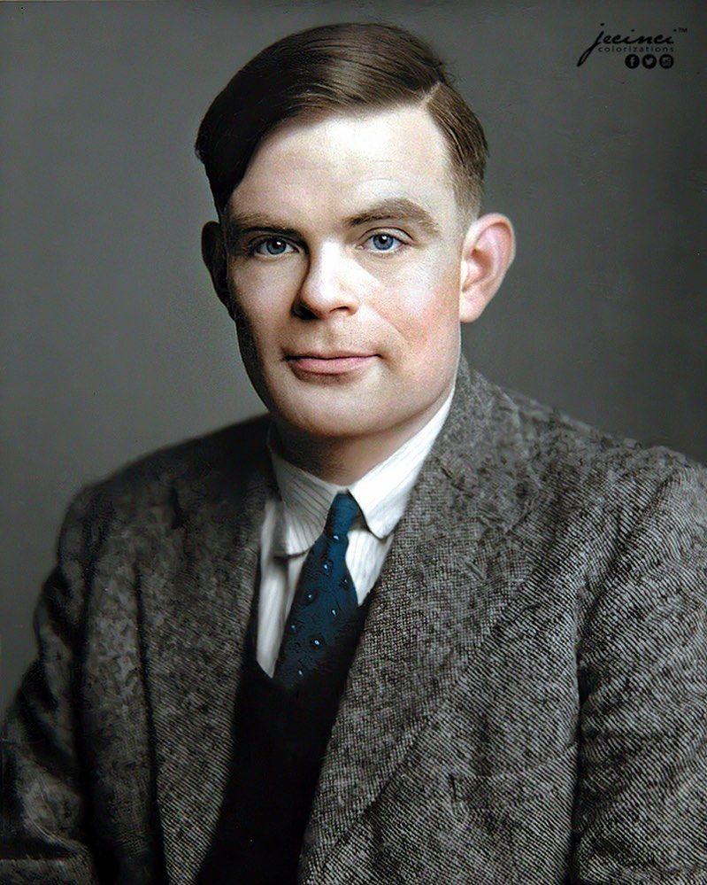
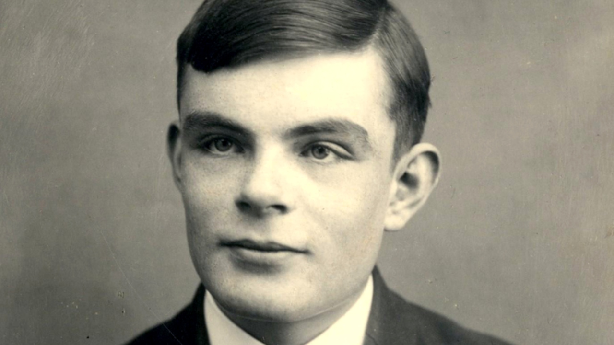

Alan Turing Wikipedia, a enciclopedia livrehttps://pt.wikipedia.org wiki Alan Turing
alan turing de pt.wikipedia.org
Alan Mathison Turing (Londres, 23 de junho de 1912 Wilmslow, Cheshire, 7 de junho de 1954) foi um matemetico, cientista da computacao, logico, ...
Causa da morte: Suicidio por ingestao de cian...
Nome completo: Alan Mathison Turing
Morte: 7 de junho de 1954 (41 anos); Wilmslow, ...
Conhecido(a) por: Lista: Criptoanalise da
?Maquina de Turing ?Joan Clarke Dietilestilbestrol ?Castracao quimica.
O que Alan Turing fez de importante?
Resultado de imagem para Alan Turing
O maior legado deixado pelo matematico Alan Turing e, sem duvidas, a invencao da maquina de Turing. Esta e um modelo teorico que pode ser usado para implementar todos os aspectos logicos e matematicos de um computador, independentemente de como ele venha a ser construido (mecanica ou eletronicamente, por exemplo).